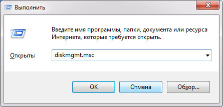
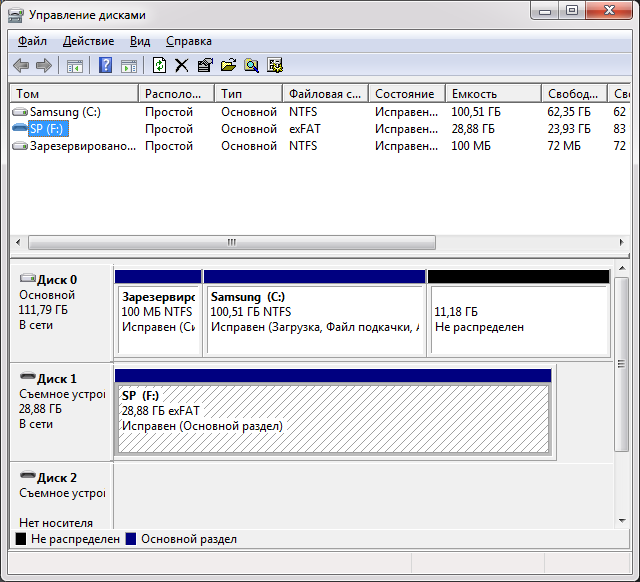
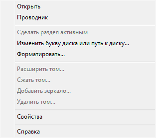
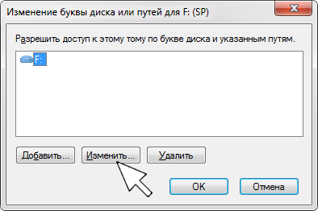
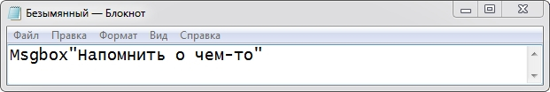
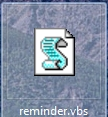
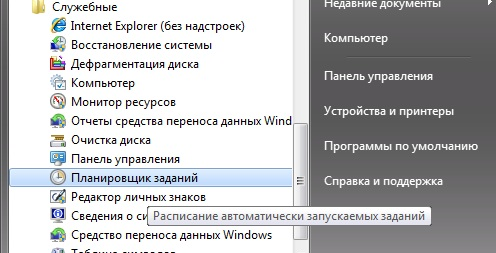
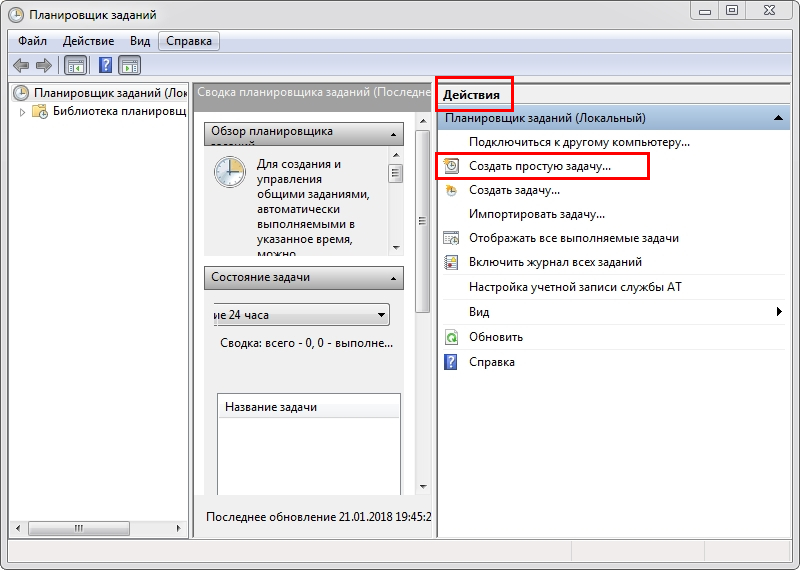
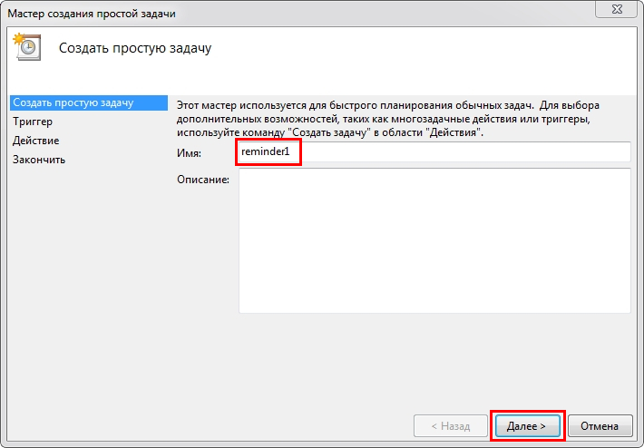

Some Info
Some Info
12-часовой формат исчисления времени предполагает разбиение 24 часов, составляющих сутки, на два 12-часовых интервала, обозначаемых a.m. (лат. ante meridiem дословно — «до полудня») и p.m. (лат. post meridiem дословно — «после полудня»).
12-часовой формат преобладает в Австралии, Канаде (за исключением Квебека), Новой Зеландии, США и на Филиппинах. Совместно с 24-часовым форматом он используется в Албании, Бразилии, Великобритании и некоторых других англоязычных странах, в Греции, Ирландии, канадском Квебеке и Франции. В остальных странах мира 24-часовой формат является преобладающим, однако 12-часовой формат широко используется в неформальном общении. При этом вместо a.m. и p.m. употребляются описательные конструкции, например, «утра», «дня», «вечера», «ночи», «пополудни» и другие. Распространённость 12-часового формата в неформальном общении объясняется удобством более кратких числительных, а также 12-часовым циклом классического циферблата часов.
| 06:00 | 6:00 a.m. | Шесть (часов) утра |
| 18:00 | 6:00 p.m. | Шесть (часов) дня |
Когда подключается съемное устройство к компьютеру, устройству присваивается свободная буква диска. При каждом подключении буква будет другой. А если к компьютеру подключено несколько USB-накопителей одновременно то, определить какое из них выбрать в данный момент сложно. Облегчить задачу можно присвоив фиксированную букву диска съемному устройству. Нажав сочетание "Win + R" введите в поле команду «diskmgmt.msc».
Откроется окно "Управление дисками", в котором найдите необходимый накопитель, например
И нажав правую клавишу мыши, выберите в контекстном меню "Изменить букву диска или путь к диску".
Если надо изменить букву присвоенную диску ОС, то в появившемся окне нажмите кнопку "Изменить".
В следующем окне (далее без иллюстраций) нажмите справа в раскрывающемся списке подходящую букву и подтвердите, нажав "ОК". При этом может выскочить окно с предупреждением "Некоторые программы, использующие эту букву диска могут перестать работать. Хотите продолжить?" Убедитесь что буква, которую хотите назначить, не используется другими программами, и нажмите «Да».
Если же вас устраивает та буква, которую присвоила ОС носителю в данный момент, то после нажатия правой клавиши и появления окна "Изменить букву диска или путь к диску", не нажимая "Изменить", а просто выделите букву диска и нажмите "ОК". Возможно это оптимальный вариант, т.к. при этом наверняка не затрагиваются настройки программ.
Напоминание создается с помощью стандартных средств системы. Открыть Блокнот, где без пробелов ввести строку текста с фразой: Msgbox"Напомнить о чем-то"
В меню Блокнота кликнуть Файл - Сохранить - перейти на Рабочий Стол (или другой каталог) - ввести имя файла: reminder.vbs (имя reminder - произвольное). На рабочем столе (или в другом выбранном каталоге) появится этот файл сценария (vbs = visual basic script).
Блокнот с текстом файла сценария можно закрыть. Далее - кликнуть кнопку ОС Пуск - Все программы - Стандартные - Служебные - Планировщик заданий
На открывшейся панели планировщика в разделе Действия кликнуть пункт Создать простую задачу.
На открывшейся следующей панели ввести имя задачи и кликнуть кнопку Далее.
Далее без иллюстраций. На следующих панелях задается периодичность задачи, время срабатывания напоминания, дата старта работы напоминаний, далее указывается файл с текстом напоминания. В заданное время на экране монитора появится окошко с текстом напоминания. В дальнейшем можно открыть планировщик заданий, перейти в библиотеку планировщика и выбрав это задание произвести его настройку или удалить его.
Как в проводнике видеть эскизы pdf? Очень просто. Заходим: Меню -> Редактирование -> Установки -> Основные. Ставим галочку "Включить миниатюры предварительного просмотра в Проводнике Windows". И ниже: "Режим касания" - "Всегда".


| № | Sum | Per cents |
|---|---|---|
| 1 | ||
| 2 | ||
| 3 | ||
| ∑ |
Pol Banky © 2020